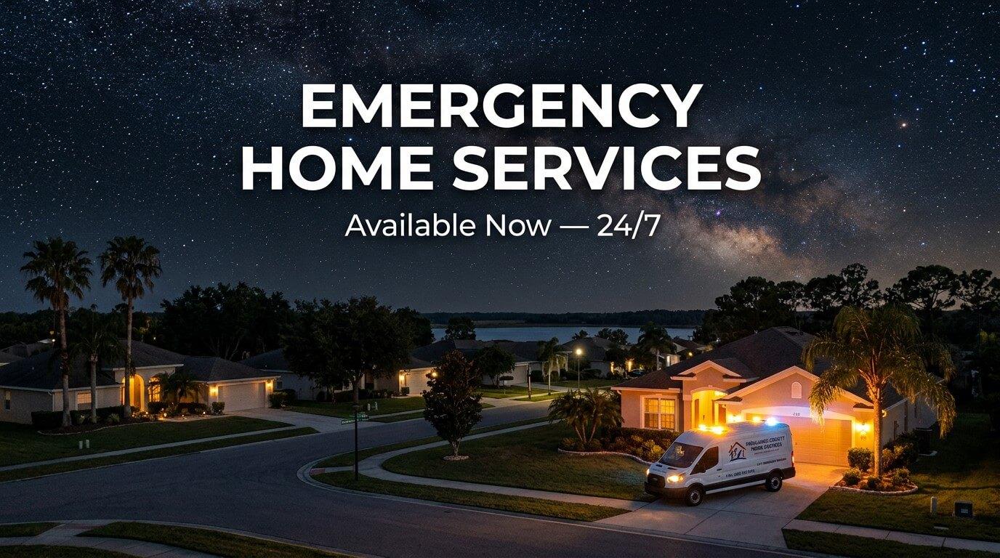

Emergency HVAC
AC stopped working, heat not turning on, no cool air — licensed HVAC contractors available for emergency calls across Highlands County.
Call for HVAC Emergency
Highlands Home Services Network connects Highlands County residents with licensed local contractors for emergency home service requests — day or night, in Sebring, Avon Park, Lake Placid, Lorida, and Venus.
Highlands Home Services Network is a lead generation and referral service. We are not a licensed contractor and do not perform trade services.
Whether your AC has stopped working on a hot August night, you have a plumbing emergency at midnight, or you need an electrical issue assessed immediately — our network includes licensed contractors across the trades Highlands County homeowners need most.
AC stopped working, heat not turning on, no cool air — licensed HVAC contractors available for emergency calls across Highlands County.
Call for HVAC EmergencyBurst pipe, no water, leaking fast — submit your request now and we will match you with a licensed plumbing contractor in Highlands County.
Submit a Plumbing RequestPower out, panel issue, or a safety concern — submit your request and we will connect you with a licensed electrician serving your area.
Submit an Electrical RequestStorm damage, active leak, or structural concern — we are building a roofing contractor network for Highlands County. Submit your request now.
Submit a Roofing RequestOur contractor network covers every major community in Highlands County — including the rural areas that national platforms do not reach. If you are in any of the communities below, call now or submit a request and we will match you with the right licensed contractor.
| Community | Zip Code(s) | Emergency Contact |
|---|---|---|
| Sebring, FL | 33870, 33871 | 📞 Call Now |
| Avon Park, FL | 33825 | 📞 Call Now |
| Lake Placid, FL | 33852 | 📞 Call Now |
| Lorida, FL | 33857 | 📞 Call Now |
| Venus, FL | 33960 | 📞 Call Now |
After you call or submit your request, here are the most important steps to take while you wait to hear from a contractor.
Check your thermostat settings and circuit breaker first. Close blinds to reduce heat gain. Move to the coolest room in the home. Do not open the outdoor unit — call a licensed contractor.
Locate your main water shutoff valve and turn it off immediately. This is usually near your water meter or where the main line enters the home. Then call for emergency plumbing service.
If you smell burning or see sparks, turn off the main breaker immediately and leave the property if necessary. Do not attempt to diagnose electrical issues yourself — call a licensed electrician.
Move valuables and furniture away from the affected area. Place buckets or towels to limit interior water damage. Document damage with photos before any repair work begins.
Call Highlands Home Services Network immediately. We connect you with a licensed local HVAC contractor available for emergency service in Sebring, Avon Park, Lake Placid, Lorida, and Venus — day or night.
Yes. Highlands Home Services Network connects Highlands County residents with licensed contractors available for emergency home service requests 24/7 across all five communities we serve.
Contact Highlands Home Services Network. We match homeowners with licensed plumbing contractors serving Sebring and surrounding Highlands County communities on an emergency basis.
When you call or submit a request, it is routed immediately to a licensed contractor in our network who covers your area. Response times depend on contractor availability, but our network is structured to prioritize emergency requests above all else.
Yes. Our network specifically covers the rural communities that national platforms ignore — including Lorida (33857) and Venus (33960). Highlands County is our entire focus, not an afterthought.
No. Highlands Home Services Network is a digital lead generation and referral service operated by Obsidian Peak Holdings LLC. We are not a licensed contractor and we do not perform trade services. All work is performed by independent licensed professionals in our network.
HVAC emergency service is currently active across all five Highlands County communities. Plumbing, electrical, and roofing contractors are being added to the network — submit a request for any trade and we will connect you with the best available option right now.